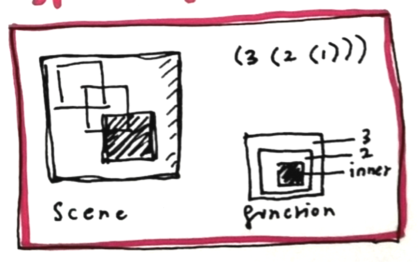

What’s special about the way we’re layering in Racket Lang’s images teachpack?
2htdp/image
(require 2htdp/image)

What’s special about the way we’re layering in Racket Lang’s images teachpack?
2htdp/image
(require 2htdp/image)

Lisp feels a bit back-to-front and inside-out when you first start!
Our background is the innermost item, and our rocket the outermost
(wrapped in place-image function)
(require 2htdp/image)
; Here's the constants
(define WIDTH 180)
(define HEIGHT 180)
(define MIDDLE (/ WIDTH 2))
(define BACKGROUND
(rectangle WIDTH HEIGHT "solid" "black"))
(define ROCKET
(bitmap/file "rocket.png"))
(define MOON
(circle 40 "solid" "white"))
; Let's make our image!
(place-image
MOON 10 10
(place-image
ROCKET MIDDLE MIDDLE
BACKGROUND))